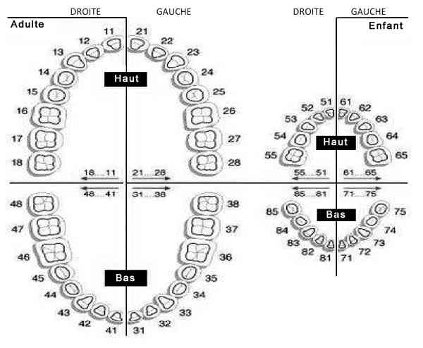

Bienvenue Sur Medical Education
Urgences dentaires
Spécialité : pediatrie / traumatologie /
Points importants
-
En cas de luxation complète de dents, lors d'un traumatisme, ne pas les jeter (y compris les dents de lait) ; toute dent peut faire l'objet d'une réimplantation
-
En cas d'algie dentaire ne pas donner d'aspirine ou tout autre AINS
-
Tout traumatisme dentaire impose un diagnostic précis de la gravité de la lésion dont dépendra le traitement et le pronostic de survie de la dent à long terme
-
Tout traumatisme dentaire (de la simple contusion à l'avulsion complète), même pris en charge dans les meilleur délais, peut entraîner une mortification totale de la dent allant jusqu'à sa perte définitive
Présentation clinique / CIMU
SIGNES FONCTIONNELS
Présentation clinique / CIMU
SIGNES FONCTIONNELS
Généraux
- Recherche de fièvre (non présente systématiquement)
Spécifiques
- Douleurs dentaires
- Tuméfaction de la joue, de la mandibule, de la gencive, de la paupière
- Rougeur de la joue
CONTEXTE
Terrain
- Pour les traumatismes dentaires
- Pic de fréquence entre 5 et 11 ans
- Incisives et canines
Traitement usuel
- AINS
- Aspirine
- Traitement immunosuppresseur
Facteurs de risque
- Diabète
- Carences vitaminiques : A, B, C, D, K
- Hématopathies
- Traitement immunosuppresseur
Circonstances de survenue
- Chute de la hauteur
- Accident de la voie publique
- Agression
EXAMEN CLINIQUE
 _678 Dentition
-
Pour les traumatismes dentaires :
- petit point rouge visible dans la dent : mise à nue de la pulpe
- dent douloureuse sans fracture ni mobilité avec plus ou moins fissuration de l'émail : contusion dentaire
- ébranlement de la dent sans fracture (tant au niveau de la dent que de ses organes de soutien) : contusion dentaire
- dent insensible avec tests de vitalité négatifs : contusion dentaire avec sidération de la sensibilité dentaire due à la tuméfaction dentaire post traumatique
- dent en position anormale sur l'arcade dentaire avec, à son pourtour, une gencive saignante et boursouflée : luxation partielle
- dent complètement sortie de son alvéole : luxation complète
- trait de fracture visible au niveau de la couronne (partie visible de la dent) ou au niveau de son apex (racine) voire les deux, avec ou sans mise à nue de la pulpe dentaire avec ou sans fracture de l'os alvéolaire : fracture dentaire
-
Pour les infections dentaires :
- gencive rouge, douloureuse et tuméfiée : gengivite
- douleur lancinante exacerbée en position couchée, associée à une sensation de " dent longue " : desmodontite
- percussion verticale de la dent très douloureuse : desmodontite
- tuméfaction chaude douloureuse de la joue, du plancher buccal, du cou associée à un trismus : cellulite faciale d'origine dentaire mandibulaire
- tuméfaction de la joue, des paupières, du palais : cellulite faciale d'origine dentaire du maxillaire supérieur
CIMU
- Tri 3 si hémorragies dentaires ou si infections sur terrains fragilisés ou si douleur intense
- Tri 4 dans les autres cas
Signes paracliniques
BIOLOGIQUE
-
NFS si fièvre et critères de gravité
-
Hémocultures si fièvre et critères de gravité
IMAGERIE
-
Panoramique dentaire
-
Clichés rétroalvéolaires
Diagnostic étiologique
-
Carie
-
Desmodontite
-
Abcès osseux ou des structures molles
-
Parodontopathies
-
Traumatisme dentaire
Traitement
TRAITEMENT PREHOSPITALIER/INTRAHOSPITALIER
Diagnostic étiologique
- Carie
- Desmodontite
- Abcès osseux ou des structures molles
- Parodontopathies
- Traumatisme dentaire
Traitement
TRAITEMENT PREHOSPITALIER/INTRAHOSPITALIER
Stabilisation initiale
- Si signes de gravité : scope et voie veineuse périphérique
- Si hémorragie dentaire : faire mordre une compresse sèche pliée en 4 épaisseurs au niveau de l'hémorragie pendant 20 min sans relâcher la pression
- Si cellulite faciale : ATB per os ou IV (Augmentin® 1gx3/j ou Birodogy®l 1,5 MU/250 mgx3/j) en fonction de la tolérance et transfert vers les urgences stomatologiques (extraction dentaire et drainage de la collection purulente)
Suivi du traitement
- Si contusion dentaire : traitement médical et alimentation molle pendant 1 mois
- Si luxation partielle : transfert en urgence en stomatologie (réimplantation associée à une contention externe pendant 6 semaines + alimentation molle ou liquide pendant la durée du blocage + bains de bouche réguliers)
- Si luxation partielle en ingression (enfoncée dans son alvéole) : abstention thérapeutique avec surveillance pendant 3 mois (risque de mortification de la dent)
- Si luxation complète : transfert en stomatologie en urgence et réimplantation directe de la dent dans son alvéole en la tenant par la couronne après nettoyage à l'eau claire sans frotter la racine. Si réimplantation impossible : conservation des dents dans un flacon de sérum physiologique. Ne pas mettre la dent dans la glace
- Si fracture dentaire sans mise à nue de la pulpe sans mobilité : transfert en stomatologie avec bains de bouche et traitement antalgique de niveau 1 ou 2
- Si fracture avec mise à nue de la pulpe (point rouge ou goutte de sang sur la tranche de la section de la dent) : transfert en stomatologie pour traitement canalaire et traitement antibiotique
- Si fracture associée de l'os alvéolaire : transfert en stomatologie (contention externe)
MEDICAMENTS
- Antalgiques de niveau 1 ou 2
- Antibiotiques : Augmentin® 1g 3 fois/j ou Birodogyl® 1.5 MU/250 mg 3 fois/j
- Bains de bouche (Eludril®) à l'eau glacée 3 fois/j
Surveillance
CLINIQUE
-
En cas d'infections dentaires :
-
température
-
extension de la rougeur de la tuméfaction
-
suivi par un chirurgien dentiste
-
En cas de traumatismes alvéolodentaires : suivi par un chirurgien dentiste :
-
récupération de la vitalité de la dent
-
mortification pulpaire nécessitant un traitement canalaire
Devenir / orientation
CRITERES D'ADMISSION
-
Si signes de gravité : transfert en réanimation
-
Si cellulite du plancher de la bouche et des amygdales, cellulite de l'angle interne de l'oeil, notion d'un terrain fragile sous jacent : hospitalisation
-
Si bonne tolérance hémodynamique : transfert en stomatologie
CRITERES DE SORTIE
-
Tout patient sans signe de gravité ne nécessitant pas une hospitalisation en réanimation ou en stomatologie immédiate
ORDONNANCE DE SORTIE
-
Antalgiques de niveau 1 ou 2
-
Antibiotiques : Augmentin® 1g 3 fois/j ou Birodogyl® 1,5 MU/250 mg 3 fois/j
-
Bains de bouche (Eludril®) à l'eau glacée
Mécanisme / description
-
Carie : atteinte de l'émail dentaire par une prolifération microbienne favorisée par le tartre (mauvaise hygiène buccale)
-
Desmodontite : inflammation du ligament alvéolodentaire
-
Abcès osseux ou des structures molles avoisinantes par la formation d'un granulome (foyer infectieux latent localisé au niveau des racines dentaires) puis mortification dentaire (dent insensible et devenant noirâtre) et enfin diffusion microbienne systémique
-
Parodontopathies : atteinte des éléments de soutien de la dent (gencive, cément, os) provenant le plus souvent, d'un processus infectieux mais parfois d'une pathologie d'ordre général
-
Traumatisme dentaire : sa gravité dépend de l'état de délabrement des éléments de soutien de la dent, à savoir l'os alvéolaire et le ligament alvéolodentaire
- température
- extension de la rougeur de la tuméfaction
- suivi par un chirurgien dentiste
- récupération de la vitalité de la dent
- mortification pulpaire nécessitant un traitement canalaire
Devenir / orientation
CRITERES D'ADMISSION
- Si signes de gravité : transfert en réanimation
- Si cellulite du plancher de la bouche et des amygdales, cellulite de l'angle interne de l'oeil, notion d'un terrain fragile sous jacent : hospitalisation
- Si bonne tolérance hémodynamique : transfert en stomatologie
CRITERES DE SORTIE
- Tout patient sans signe de gravité ne nécessitant pas une hospitalisation en réanimation ou en stomatologie immédiate
ORDONNANCE DE SORTIE
- Antalgiques de niveau 1 ou 2
- Antibiotiques : Augmentin® 1g 3 fois/j ou Birodogyl® 1,5 MU/250 mg 3 fois/j
- Bains de bouche (Eludril®) à l'eau glacée
Mécanisme / description
-
Carie : atteinte de l'émail dentaire par une prolifération microbienne favorisée par le tartre (mauvaise hygiène buccale)
-
Desmodontite : inflammation du ligament alvéolodentaire
-
Abcès osseux ou des structures molles avoisinantes par la formation d'un granulome (foyer infectieux latent localisé au niveau des racines dentaires) puis mortification dentaire (dent insensible et devenant noirâtre) et enfin diffusion microbienne systémique
-
Parodontopathies : atteinte des éléments de soutien de la dent (gencive, cément, os) provenant le plus souvent, d'un processus infectieux mais parfois d'une pathologie d'ordre général
-
Traumatisme dentaire : sa gravité dépend de l'état de délabrement des éléments de soutien de la dent, à savoir l'os alvéolaire et le ligament alvéolodentaire
Auteur(s) : Alexandra ATLAN